january 2006
JAL Serial Libraries
Introduction
This document gives an overview of the available/definied serial uart libraries, available for JAL V5.0 and up. There are also libraries (examples) how to use even higher level routines, see Console_Devices.
First some advise for unexperienced users:
Library overview
Serial_Hardware
This library supports RS232 communication through the hardware USART on 16F and 12F pics (maybe 18F too ??). It supports all available Baudrates (also non-standard), at any clock speed, and the settings are optimized for the smallest Baudrate error. If a Baudrate error larger than 3% is detected the compiler will generate an error. The number of databits is fixed at 8, there's no parity support, 1 startbit and 1 stopbit. The library supports both the variable-type-use and the procedure-type-use, see examples below. The definition of UART settings is done through constants (to save memory). The UART can be switched on and off, so the the pins can be multiplexed for other functionality. The library is interrupt safe and has no dependancies. Note: the hardware USART can also be used for synchronuous communication, e.g. see SPI_Hardware1.
Initialisation
The Baudrate is specified in bits/sec and is only limited by the combination of clock frequency and the available hardware. The init procedures calculates the Baudrate settings, initializes the pin directions and enables the USART for asynchronuous communication. The disable routine disables the USART, so the pins can be used for other purposes (IO-direction of the pins is left unchanged)
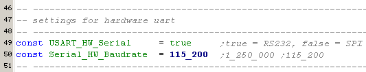
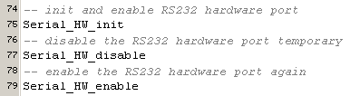
Procedure-type-use
This is the simplest method to use the serial library, because it's fully unambiguous. If a new valid dataword is received, the function will return true. Sending of the data is done directly (the USART has a 1.5 byte transmit FIFO). If the transmit FIFO cann't except more data, the write procedure will wait until it can drop the data in the FIFO.
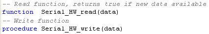
|
Example Procedure-type-use This example shows the use of the serial procedures. The read function only returns true, if new data is available. |
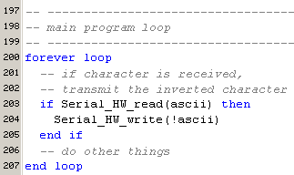 |
Variable-type-use (1)
These methods (here declared as variables, to clearify the explanation), are especially usefull, if you want to use the received result directly (e.g. in a formula or as a parameter for some other procedure). Before using the receive part (Serial_HW_data on the right side of an assignment) you can test if there is data available, by testing the flag Serial_HW_data_available. This is not strictly necessary, because Serial_HW_Data will check this flag too.
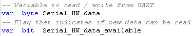
|
Example Variable-type-use(1) This example shows the use of the serial IO routines just like normal variables. To test if there's new input data available you must check the flag Serial_HW_data_available. |
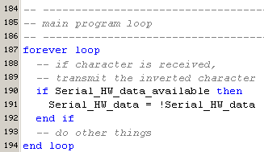 |
Variable-type-use (2)
These are the most complex routines to use. Apperently you can use the transmit and receive routines just like variables, but both should be tested before use !!! Look at the example below how it works.
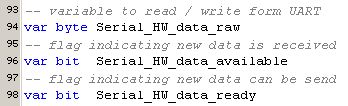
|
Example Variable-type-use(2) These routines are only to be used by experienced users, and only have sense when using extra software FIFOs. |
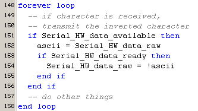 |
Serial_Hardware2
This library supports the second hardware U(S)ART, available on some PICs and is equivalent to Serial_Hardware1.
-- preliminary --
Serial_Software
This library supports RS232 communication through any IO-pins of the PIC. The procedures are kept identical as in Serial_Hardware1, thus apart from the initialization part, the use of this library is equal to the hardware equivalent, which makes it easy to switch between hardware and software uart. It will also make it easy to construct "console" read/write routines, see "JAL Console library".
It supports all available Baudrates (also non-standard), at any clock speed, and the settings are optimized for the smallest Baudrate error. For example at a clock speed of 20 MHz, it can set the Baudrate form smaller than 110 Baud upto 230_400 Baud. If the baudrate can not be realized (either too low or too high), a compiler error is generated. Number of databits is fixed to 8, no parity, 1 stop bit and 2 stopbits. The polarity of the serial communication can be set inverted (this is the normal setting if you're using somekind of level-shifting chip, like MAX232 or FTDI232) or non-inverted.
The library supports only the procedure-type-use, and variable-type-use send procedures, because the variable-type-use in receiving mode seems only meaningfull when receiving is done by interrupts. The definition of UART settings is done through constants (to save memory). The UART can be switched on and off, so the pins can be multiplexed with other functions. The library has no dependancies and is interrupt safe, due to the fact that during transmission or receive interrupts are blocked.
Initialisation
In the initialization part a number of constants (Baudrate / inverted) should be set and the relevant IO-pins should be specified. Because this library is fast (upto 230_400 Baud at 20 MHz), you've to specify a lot of details of the pins, at which port it's located, what's the name of the shadow buffer etc. Below is an example which uses JALcc macros to make this task easy. For those not using JALcc, there's an include file Serial_Software1_defs where all these items are specified.
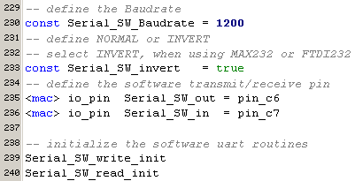
Procedures
The normal read procedure, tries to read a byte from the serial input pin and if it succeeds within the timeout period, it returns true and a valid data-byte, otherwise it will return false and no data. The timeout period can be set by .... The wait-version of the read routine, waits (infinitly) untill a databyte is received.
The write routine is both available as a procedure and as pseudo-variable. The data will be sent immediatly.
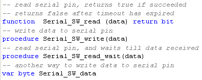
|
Example 1 This example shows the most prefered use of the serial procedures. The read function only returns true, if new data is available. |
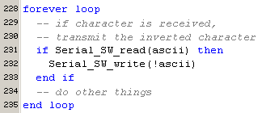 |
|
Example 2 This example shows the use of the serial IO routines, where the transmit is done through a pseudo variable. |
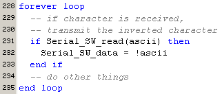 |
|
Example 3 This example shows the use of the serial IO routines, where the complete program is stopped waiting for serial data to arive. |
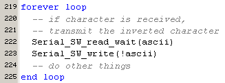 |
Serial_Software2
Because this library is depending on a number of not working libraries (jpic,jdelay,interval) in JAL V5, this library cann't not be used at the moment.
Serial_Software3
This library is an improved/extended version of Serial_Software1, it handles serial input by interrupts and stores the received data in a FIFO. This library can handle more data at higher Baudrates at it's receive pin. For transmitting this library has no advantage over Serial_Software1.
-- preliminary --